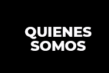
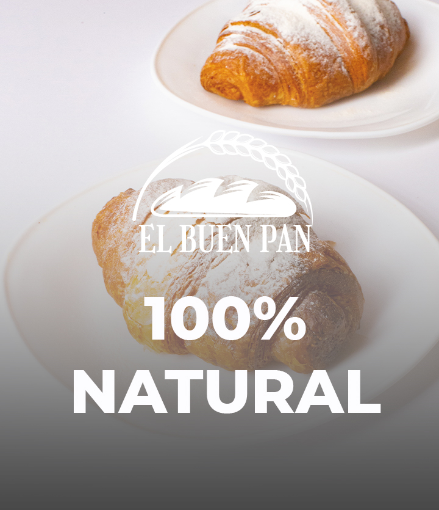
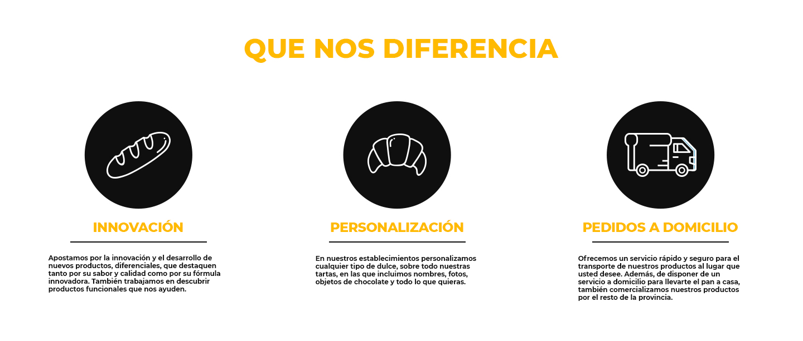

|  |
 |
NUESTRA PANADERÍA
|
El Buen Pan es una empresa familiar que nació a principios de los años 80 en el pueblo de Quetzaltenango, con el fin de servir pan tanto a particulares como a tiendas, bares, restaurantes y supermercados. El Buen Pan ha sido siempre una empresa preocupada por satisfacer las necesidades de sus clientes, ofreciendo siempre la máxima calidad tanto en sus productos como en sus servicios. A lo largo de los años, El Buen Pan ha apostado por la innovación, desarrollando nuevos productos diferenciales tanto por su sabor, como por su funcionalidad. Como resultado de esa investigación, nace su producto estrella, Laxapan, el primer pan de fibra verde. Su misión es ser la empresa líder en el negocio de la panadería y repostería, superando las expectativas de los clientes, a través de un equipo comprometido. El Buen Pan adapta sus productos a las exigencias de sus clientes, es por ello que ofrecemos un especializado abanico de productos para el sector de la hostelería, modificando formas, pesos y tamaños de los productos en función de sus necesidades. Ofrecemos un servicio rápido y seguro para el transporte de nuestros productos al lugar que el cliente desee. Además de disponer de un servicio a domicilio, también comercializamos nuestros productos por el resto de provincias. |
 |
| VIDEO PRESENTACIÓN |
|  |